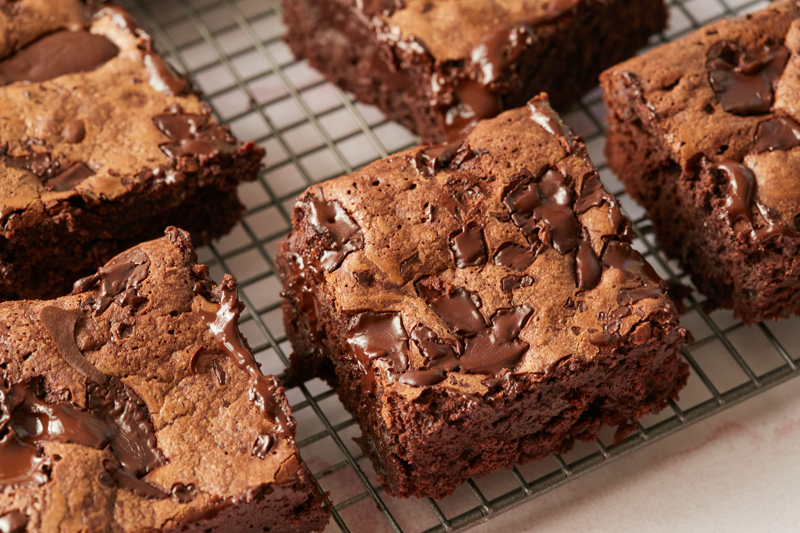

Brownies

Description
A chocolate brownie or simply a brownie is a square or rectangular
chocolate baked confection. Brownies come in a variety of forms and
may be either fudgy or cakey.
They may also include nuts, frosting, cream cheese, chocolate chips,
or other ingredients. The brownie was developed in the United
States at the end of the 19th century and popularized there during the first half of the 20th century.
They are typically eaten by hand, often accompanied by milk, served warm with
ice cream (a la mode), topped with whipped cream, or sprinkled with
powdered sugar and fudge. In North America, they are common homemade
treats and they are also popular in restaurants and coffeehouses.
Ingredients
- Flour
- Unsweetened Cocoa powder
- Baking powder
- Sugar
- Eggs
- Butter
- Vanilla extract
- Salt
- Optional Chocolate chips
- Optional Chopped pecans or walnuts
Steps
- Preheat oven to 350 degrees. Grease a 9 x 13 baking pan with butter and set aside.
- In a medium pan, melt ¾ cup of butter over medium-low heat.
- When butter is completely melted, use a rubber spatula to mix in ¾ cup of cocoa powder.
- Turn off heat and stir in 1 teaspoon of vanilla and 2 ¼ cups of sugar.
- Add 4 eggs one at a time, mixing well after each addition.
- Stir in 1 ¼ cups of flour, 1 teaspoon of baking powder and 1 teaspoon of salt until fully incorporated.
- If you are adding chocolate chips and/or chopped nuts, gently mix them in now.
- Pour batter into the prepared 9 x 13 baking dish. Bake for 20-25 minutes
until toothpick inserted in the center comes out with only a few crumbs
on it. It will finish the baking process as it cools.